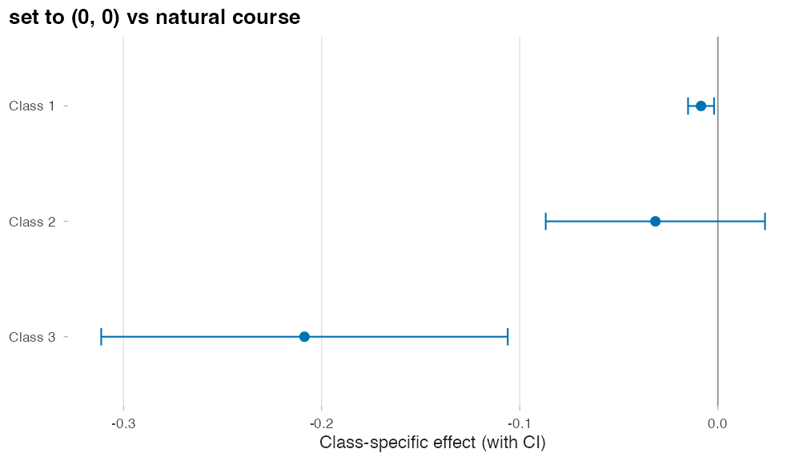
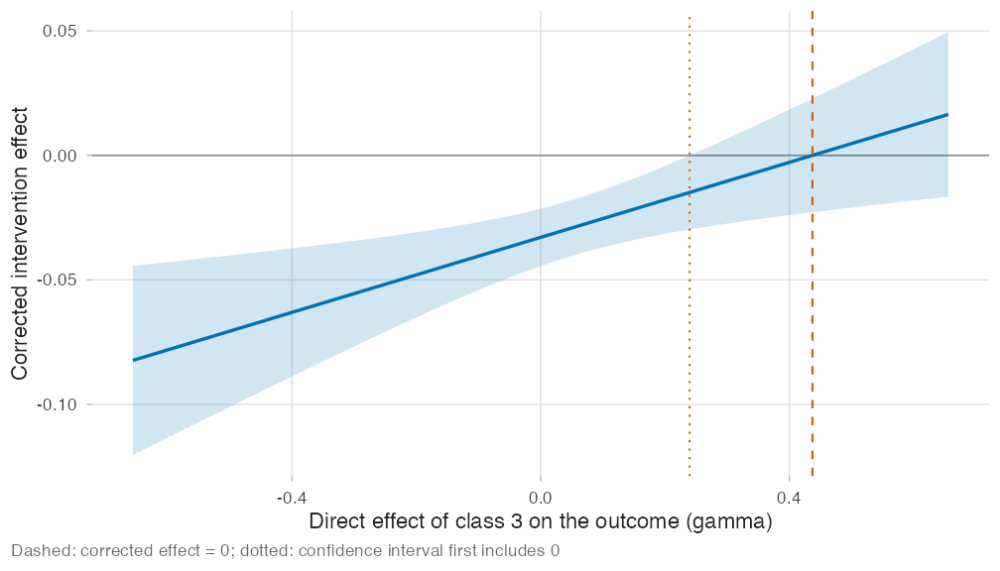

Function guide
function-guide.RmdThis vignette explains how to use each of the nine
intervene_*() functions: the question it answers, when it
is the right tool, the data it needs, the arguments that matter, a
complete example on the shipped data, how to read and report every
number it prints, and which sensitivity tool addresses which assumption.
The theory is in vignette("latentclasscausal") and on the
documentation pages of LatentClassCausal.jl; the Julia version of this
guide is the page Function guide there.
The outputs below are real (rendered on the Nibi cluster with 16
Julia threads). Two simulated datasets with known effects are used:
programme (true effects of the programme on the
Flourishing, Moderate and Distressed classes +0.179, −0.059, −0.120;
?programme) and ace_study (preventing abuse
and neglect: true effect on depression −0.038, on self-rated health
+2.00; ?ace_study). To keep the vignette fast, the
class-model bootstraps use B = 100 replicates; use the
default B = 200 for a paper. With B = 200 the
R and Julia interfaces give identical numbers.
library(latentmixtures)
library(latentclasscausal)
lm_start() # optional (started on first use); threads = "auto" by default#> Starting Julia ...#> Julia 1.13.2 started with 10 threads; LatentMixtures.jl loaded.Which function answers my question?
First ask where the latent classes are: are they the outcome (measured after treatment by outcome indicators), or are they formed by the exposures (they summarise co-occurring exposures, and the outcome is an observed variable)?
| Your question | Latent classes are | Function |
|---|---|---|
| Does a binary treatment change the probability of belonging to each class? | the outcome | intervene_membership() |
| … within a subgroup defined before treatment? | the outcome | intervene_subgroup() |
| How strong would unmeasured confounding have to be to explain that effect away? | the outcome | intervene_membership_sensitivity() |
| Does the measurement of the classes differ between treated and untreated (DIF)? | the outcome | intervene_dif() |
| Would an intervention on one or several binary exposures change membership in a latent class outcome? | the outcome | intervene_latent_outcome() |
| What is the effect of intervening on some exposures on an observed outcome? | (none needed) | intervene_effect() |
| … adjusting for the latent pattern of the other exposures? | formed by the other exposures | intervene_effect(adjust = "classes") |
| For whom? How large is that effect within each latent class of the exposures? | formed by the exposures | intervene_within() |
| How would the class model classify the post-intervention profiles? (descriptive) | formed by the exposures | intervene_shares() |
| Could the latent class of the exposures affect the outcome directly and confound the effect? | formed by the exposures | intervene_latent_sensitivity() |
As a sequence of questions:
-
Is the outcome a latent class? With one binary
treatment:
intervene_membership(), thenintervene_membership_sensitivity()andintervene_dif()for its assumptions andintervene_subgroup()for heterogeneity. With an intervention on one or more binary exposures (static, stochastic, targeted):intervene_latent_outcome(). -
Is the outcome observed?
intervene_effect()for the population effect. If the exposures form latent classes:intervene_within()for the effect in each class,intervene_latent_sensitivity()for latent confounding,adjust = "classes"against extreme weights,intervene_shares()to relate the intervention to the class sizes of an LCA paper (classification, not a causal effect).
The status of each estimator (Established, Established-with-adaptation, Experimental) is listed in the Method status table of the LatentClassCausal.jl documentation and repeated below.
1. Treatment effect on class membership:
intervene_membership()
Question it answers. Does a binary treatment change which latent class people belong to? For each class, . Example: does a school mental-health programme raise the probability of being in the Flourishing wellbeing class?
When to use it / when not. The treatment is one 0/1
variable that precedes the indicators, the classes are measured after
treatment by their own indicators, and the confounders are observed. For
an intervention on several exposures, or a stochastic or targeted one,
use intervene_latent_outcome(). If the classes are formed
by the exposures, see intervene_within() and
intervene_shares(). Valid only if the measurement model is
the same for treated and untreated (no DIF).
Data you need. A latentmixtures::lca()
(or lpa()) model of the outcome indicators fitted
without covariates, and the same data frame (same rows,
same order) with the treatment (0/1, logical or two-level factor) and
the confounders (factors are dummy-coded).
Key arguments.
| argument | default | when to change it |
|---|---|---|
estimator |
"aipw" |
"ipw_bch" as a check (needs a correct
propensity model); "or" (no SE); "ipw_modal",
"aipw_posterior", "naive" only as biased
comparators |
propensity_model |
"linear" |
"quadratic" or a learner
("lasso", "forest", "boost",
"superlearner", …) |
outcome_model |
"linear" |
the latent class regression; as for
propensity_model
|
folds |
5 |
1 turns cross-fitting off; keep it with
learners |
trim |
0 |
e.g. 0.01 under poor overlap (changes the
estimand slightly) |
seed |
1 |
fold assignment |
learners, bound
|
NULL, 0.01
|
superlearner library; bounds of learner propensity scores |
Example.
m <- lca(programme, low_mood:friends, K = 3) # outcome items only: no treatment, no covariates
convergence(m)#> Convergence check: ✓ no problems found
#> best start converged yes (240 EM iterations)
#> stage-2 starts converged 20 / 20
#> best LL replicated 20 times
#> LL at EM / after Newton -7785.7692 / -7785.7692 (gain 3.0e-06; max |gradient| 3.2e-12)
#> smallest class 0.204#> low_mood worry sleep lonely hopeless enjoy confident friends
#> class1 0.05 0.13 0.10 0.04 0.02 0.97 0.91 0.90
#> class2 0.30 0.44 0.30 0.33 0.10 0.64 0.51 0.72
#> class3 0.86 0.83 0.68 0.68 0.55 0.25 0.15 0.39
r <- intervene_membership(m, programme, treatment = programme,
confounders = c(female, age, low_ses, distress, belonging))
r#> ▸ Causal effect of a treatment on latent class membership
#> AIPW, BCH pseudo-outcomes, 5-fold cross-fitting; N = 2000, K = 3
#> Treatment: programme
#> Confounders: female, age, low_ses, distress, belonging
#>
#> ─────────────────────────────────────────────────────────────────
#> P(C¹=k) P(C⁰=k) Δ SE 95% CI p
#> ─────────────────────────────────────────────────────────────────
#> Class 1 0.623 0.429 0.194 0.031 [0.134, 0.254] <.001
#> Class 2 0.242 0.294 −0.052 0.037 [−0.123, 0.020] .160
#> Class 3 0.135 0.277 −0.143 0.021 [−0.185, −0.101] <.001
#> ─────────────────────────────────────────────────────────────────
#>
#> Δ = P(C¹=k) − P(C⁰=k); SE from the influence function incl. the measurement model.
#> Diagnostics: entropy = 0.666, propensity range [0.022, 0.922]#> term estimate std.error conf.low conf.high
#> 1 Class 1 0.19412038 0.03079076 0.1337716 0.25446916
#> 2 Class 2 -0.05151209 0.03663291 -0.1233113 0.02028709
#> 3 Class 3 -0.14260828 0.02144657 -0.1846428 -0.10057377Robustness checks:
conf <- c("female", "age", "low_ses", "distress", "belonging")
intervene_membership(m, programme, treatment = programme, confounders = tidyselect::all_of(conf),
estimator = "ipw_bch")$delta#> [1] 0.1968477 -0.0513689 -0.1454788
intervene_membership(m, programme, treatment = programme, confounders = tidyselect::all_of(conf),
estimator = "naive")$delta#> [1] 0.022414306 -0.019912819 -0.002501486
intervene_membership(m, programme, treatment = programme, confounders = tidyselect::all_of(conf),
propensity_model = "quadratic", outcome_model = "quadratic", trim = 0.01)$delta#> [1] 0.20611972 -0.07019977 -0.13591996Reading the output.
- Convergence check: the best log-likelihood was replicated by all 20 stage-2 starts; the item profiles name the classes (labels are arbitrary; read them off your own fit): class 1 Flourishing (enjoys activities 0.97), class 2 Moderate, class 3 Distressed (low mood 0.86).
- P(C¹=k), P(C⁰=k): the share of class if everyone took part and if no one did: 62.6% vs 43.0% Flourishing, 13.6% vs 27.7% Distressed.
- Δ, SE, 95% CI, p: the effect and its influence-function standard error, which includes the estimation of the measurement model. The Δ sum to zero.
- Diagnostics: entropy 0.666 (classification quality; the lower, the larger the correction) and the propensity range [0.019, 0.923] (values near 0 or 1 mean extreme weights).
- In a paper: “Participation raised the probability of membership in the Flourishing class by 19.6 percentage points (95% CI 13.6 to 25.6) and halved that of the Distressed class (27.7% to 13.6%).” The true values are +0.179, −0.059, −0.120.
- The checks: the naive difference (≈ 0) reflects confounding by indication; IPW of the pseudo-outcomes and quadratic nuisance models with trimming agree with the default.
Assumptions and checks. No unmeasured confounding →
intervene_membership_sensitivity(); measurement invariance
across treatment groups → intervene_dif(); the right
measurement model and K → convergence() and
latentmixtures’ model comparison; positivity → the propensity range,
autoplot(r, type = "overlap"), trim. Double
robustness covers the propensity and class-regression models, not the
measurement model. Status: "aipw" Experimental;
"ipw_bch", "or" Established-with-adaptation;
the others package comparators.
Related functions.
intervene_membership_sensitivity(),
intervene_dif(), intervene_subgroup(),
intervene_latent_outcome().
2. Interventions on exposures, latent class outcome:
intervene_latent_outcome()
Question it answers. Would an intervention on one or more binary exposures change membership in a latent class outcome? , with measured by a separate model. Example: if every student took part, how would the wellbeing class shares change, compared with no one, or with current take-up?
When to use it / when not. The outcome is a latent
class and the intervention sets (setto()), reduces
(shift()) or targets (subgroup()) observed
binary exposures. For an observed outcome use
intervene_effect().
Data you need. The outcome measurement model (no
covariates) and the data frame it was fitted to, with the binary
exposures, the intervene columns among them
and the confounders.
Key arguments.
| argument | default | when to change it |
|---|---|---|
g0 |
natural() |
setto(0) for “everyone vs no one” |
estimator |
"aipw" |
"tmle", "ipw",
"gformula" (no SE) |
outcome_model,
propensity_model
|
"linear" |
"quadratic" or a learner |
folds, seed,
learners, bound
|
5, 1, NULL,
0.01
|
as in intervene_effect()
|
Example.
intervene_latent_outcome(m, programme, exposures = programme, intervene = programme,
confounders = c(female, age, low_ses, distress, belonging),
g1 = setto(1), g0 = setto(0))#> ▸ Effect of an intervention on exposures on latent class membership
#> g1: set to (1)
#> g0: set to (0)
#> aipw, 5-fold cross-fitting; N = 2000, K = 3
#>
#> ─────────────────────────────────────────────────────────────────────
#> P(C^g1=k) P(C^g0=k) Δ SE 95% CI p
#> ─────────────────────────────────────────────────────────────────────
#> Class 1 0.621 0.431 0.190 0.031 [0.129, 0.251] <.001
#> Class 2 0.242 0.291 −0.050 0.037 [−0.122, 0.023] .178
#> Class 3 0.137 0.277 −0.140 0.023 [−0.185, −0.096] <.001
#> ─────────────────────────────────────────────────────────────────────
#>
#> SE from the influence function incl. the measurement model; assumes no DIF.
#> Diagnostics: entropy = 0.666, min pi = 0.0216, max weight = 25.0
intervene_latent_outcome(m, programme, exposures = programme, intervene = programme,
confounders = c(female, age, low_ses, distress, belonging),
g1 = setto(1)) # g0 = natural(): current take-up#> ▸ Effect of an intervention on exposures on latent class membership
#> g1: set to (1)
#> g0: natural course
#> aipw, 5-fold cross-fitting; N = 2000, K = 3
#>
#> ─────────────────────────────────────────────────────────────────────
#> P(C^g1=k) P(C^g0=k) Δ SE 95% CI p
#> ─────────────────────────────────────────────────────────────────────
#> Class 1 0.621 0.520 0.101 0.021 [0.061, 0.142] <.001
#> Class 2 0.242 0.276 −0.035 0.023 [−0.080, 0.010] .132
#> Class 3 0.137 0.204 −0.067 0.013 [−0.092, −0.041] <.001
#> ─────────────────────────────────────────────────────────────────────
#>
#> SE from the influence function incl. the measurement model; assumes no DIF.
#> Diagnostics: entropy = 0.666, min pi = 0.0216, max weight = 25.0Reading the output.
- g1, g0: the interventions compared. min pi = 0.0190, max weight = 25.6: the smallest probability of an exposure value an intervention requires and the largest weight.
- Everyone vs no one: the Flourishing share rises from 43.2% to 62.5% (Δ = +0.193, 95% CI 0.132 to 0.253) and the Distressed share falls from 27.8% to 13.7% (true +0.179, −0.120).
- Everyone vs current take-up (41%): +10.5 points Flourishing, −6.7 points Distressed, the policy-relevant contrast.
- With one binary exposure this is the estimand of
intervene_membership(); the AIPW estimates differ slightly (0.193 vs 0.196) because the outcome working models differ.
Assumptions and checks. Those of
intervene_effect() with the class indicator as outcome,
plus a measurement-invariant outcome model (the
item-response probabilities do not depend on the exposures or
confounders); with one binary exposure, intervene_dif()
tests it. Status: Experimental.
Related functions.
intervene_membership(),
intervene_effect().
3. Effects within each exposure class:
intervene_within()
Question it answers. For whom? , the effect within each latent class of a class model of all exposures. Example: is preventing abuse and neglect worth more for adults from high-adversity family contexts?
When to use it / when not. The exposures co-occur in
latent patterns and the intervention targets specific exposures. The
class precedes the exposures and the intervention does not change it. If
the class could affect the outcome directly,
is biased: check with intervene_latent_sensitivity().
Data you need. The data frame with the outcome, all
binary exposures (exposures), the intervened ones
(intervene) and the confounders; and either K
or a fitted latentmixtures::lca() model of
all exposures with the confounders as covariates.
Key arguments.
| argument | default | when to change it |
|---|---|---|
model / K
|
— | pass a fitted model to fix the class labels and reuse it |
estimator |
"aipw" |
"tmle", "gformula"
("ipw" not available) |
outcome_model |
"linear" |
"quadratic" or a learner:
is not doubly robust |
family |
"gaussian" |
"binomial" for a 0/1 outcome (risk
difference) |
lca_uncertainty |
"bootstrap" |
"none" only for a quick look (SEs too
small) |
B |
200 |
50–100 for a quick look |
starts, boot_starts
|
c(100, 20), c(30, 6)
|
boot_starts = "warm" is faster but
understates SEs when classes are weakly separated |
propensity_model, folds,
seed, learners, bound
|
as intervene_effect()
|
Example.
mA <- lca(ace_study, ace1:ace8, K = 3, covariates = c(age, female, parent_edu))
convergence(mA)#> Convergence check: ✓ no problems found
#> best start converged yes (347 EM iterations)
#> stage-2 starts converged 20 / 20
#> best LL replicated 20 times
#> LL at EM / after Newton -8255.7234 / -8255.7234 (gain 0.0e+00; max |gradient| 5.2e-09)
#> smallest class 0.096
#> · EM stopped with a large gradient (max |gradient| 2.0e-01); 2 Newton steps from the EM estimates raised the log-likelihood by 0.0000 (max |gradient| now 5.2e-09), as Mplus switches from EM to quasi-Newton; the reported solution is the Newton one#> ace1 ace2 ace3 ace4 ace5 ace6 ace7 ace8
#> class1 0.08 0.05 0.03 0.06 0.08 0.08 0.18 0.02
#> class2 0.23 0.25 0.06 0.47 0.57 0.49 0.54 0.24
#> class3 0.83 0.54 0.42 0.50 0.51 0.33 0.51 0.17Class 1 is low adversity, class 2 household dysfunction (domestic violence, substance misuse, mental illness, separation around 0.5), class 3 high adversity with maltreatment (abuse 0.83, neglect 0.54).
ce <- intervene_within(ace_study, outcome = depressed, exposures = ace1:ace8,
intervene = c(ace1, ace2), confounders = c(age, female, parent_edu),
g1 = setto(c(0, 0)), model = mA, family = "binomial", B = 100)#> class-model bootstrap: 100 replicates on 10 thread(s)…
#> bootstrap 10/100 (10%), about 135 s left
#> bootstrap 20/100 (20%), about 112 s left
#> bootstrap 30/100 (30%), about 97 s left
#> bootstrap 40/100 (40%), about 81 s left
#> bootstrap 50/100 (50%), about 64 s left
#> bootstrap 60/100 (60%), about 49 s left
#> bootstrap 70/100 (70%), about 37 s left
#> bootstrap 80/100 (80%), about 23 s left
#> bootstrap 90/100 (90%), about 12 s left
#> bootstrap 100/100 (100%), done in 116 s
ce#> ▸ Class-specific effects of a hypothetical intervention on exposures
#> g1: set to (0, 0)
#> g0: natural course
#> aipw; N = 2500, K = 3; outcome depressed
#>
#> ─────────────────────────────────────────────────────────────────────────────
#> P(C=k) E[Y^g1|k] E[Y^g0|k] psi_k SE 95% CI p
#> ─────────────────────────────────────────────────────────────────────────────
#> Class 1 0.674 0.120 0.129 −0.008 0.003 [−0.015, −0.002] .011
#> Class 2 0.230 0.157 0.188 −0.032 0.028 [−0.087, 0.024] .264
#> Class 3 0.096 0.137 0.345 −0.209 0.052 [−0.311, −0.106] <.001
#> ─────────────────────────────────────────────────────────────────────────────
#>
#> Population effect: −0.033 (SE 0.007); overlap: min pi = 0.0054, max weight = 8.8
#> Assumes no direct class effect on the outcome (Y^g independent of C given A, X).
#> SE: bootstrap (100 replicates)
autoplot(ce)
Reading the output.
- P(C=k): class sizes, 0.674, 0.230, 0.096.
- E[Y^g1|k], E[Y^g0|k]: depression risk in each class with abuse and neglect prevented and under the observed course; in the high-adversity class 34.5% vs 13.6%.
- psi_k, SE, 95% CI: prevention would cut depression risk by 21 points in the high-adversity class (95% CI −31.2 to −10.8), by 3.5 points in the household-dysfunction class (interval includes 0) and by 0.9 points in the low-adversity class; the SEs are from the bootstrap (class model and nuisance models refitted, 100 replicates here; the run time is printed with the progress lines).
-
Population effect: −0.034, the effect of
intervene_effect(); it equals the class-size weighted average of the . - Because
relies on the outcome model, rerun with
outcome_model = "quadratic"; in the Julia guide this moves the high-adversity effect from −0.210 to −0.185. - In a paper: “The benefit of preventing abuse and neglect was concentrated among adults from high-adversity family contexts (9.6% of the sample), where it would lower the risk of past-year depression from 34.5% to 13.6%.”
Assumptions and checks. Those of
intervene_effect(), plus no direct effect of the class on
the outcome
()
→ intervene_latent_sensitivity(); a correct class model →
convergence(mA); not doubly robust → vary
outcome_model; keep the bootstrap SEs. Status:
Experimental.
Related functions. intervene_effect(),
intervene_shares(),
intervene_latent_sensitivity().
4. Post-intervention classification shares:
intervene_shares()
Question it answers. How would the class model of the exposures classify the exposure profiles an intervention produces? and . Example: after preventing abuse and neglect, how many profiles would still look like the high-adversity pattern?
When to use it / when not. To connect an
intervention to the class sizes of the LCA literature and to get the
behind intervene_latent_sensitivity(). No outcome is
needed. It is descriptive: the class generates the
exposures, so preventing abuse changes nobody’s class; never report
as a causal effect on class membership.
Data you need. As intervene_within()
without the outcome.
Key arguments.
| argument | default | when to change it |
|---|---|---|
model / K
|
— | the same fitted model as for
intervene_within()
|
g0 |
natural() |
another comparison |
lca_uncertainty |
"bootstrap" |
"none" only for exploration (SEs far too
small) |
B, seed
|
200, 1
|
fewer replicates for a quick look |
starts, boot_starts
|
c(100, 20), c(30, 6)
|
as intervene_within()
|
Example.
sh <- intervene_shares(ace_study, exposures = ace1:ace8, intervene = c(ace1, ace2),
confounders = c(age, female, parent_edu), g1 = setto(c(0, 0)),
model = mA, B = 100)#> class-model bootstrap: 100 replicates on 10 thread(s)…
#> bootstrap 10/100 (10%), about 153 s left
#> bootstrap 20/100 (20%), about 130 s left
#> bootstrap 30/100 (30%), about 99 s left
#> bootstrap 40/100 (40%), about 85 s left
#> bootstrap 50/100 (50%), about 68 s left
#> bootstrap 60/100 (60%), about 55 s left
#> bootstrap 70/100 (70%), about 40 s left
#> bootstrap 80/100 (80%), about 25 s left
#> bootstrap 90/100 (90%), about 12 s left
#> bootstrap 100/100 (100%), done in 121 s
sh#> ▸ Post-intervention classification shares (latent class model of all exposures)
#> g1: set to (0, 0)
#> g0: natural course
#> N = 2500, K = 3
#>
#> ──────────────────────────────────────────────────────────
#> pi_k^g1 pi_k^g0 Δ SE 95% CI
#> ──────────────────────────────────────────────────────────
#> Class 1 0.733 0.674 0.058 0.008 [0.043, 0.074]
#> Class 2 0.247 0.230 0.017 0.025 [−0.032, 0.066]
#> Class 3 0.020 0.096 −0.075 0.026 [−0.127, −0.024]
#> ──────────────────────────────────────────────────────────
#>
#> Shares of the model's classification of post-intervention profiles; not a causal effect
#> on the latent class (the class generates the exposures).
#> SE: bootstrap (100 replicates, class model refitted)
hi <- which.max(sh$pi0 - sh$pi1) # the class whose share falls most
hi#> [1] 3Reading the output.
- pi_k^g0: under the natural course, the class sizes; pi_k^g1: the share of post-intervention profiles classified into each class. Only 2.0% would look like the high-adversity pattern (now 9.6%); most move to the low-adversity class.
-
Δ, SE, 95% CI: bootstrap SEs (class model refitted): Δ =
−0.075 for the high-adversity class (95% CI −0.121 to −0.029). With
lca_uncertainty = "none"they would be several times smaller (0.004 instead of 0.025 in the Julia guide) and should not be reported. - In a paper: “Under the class model, preventing abuse and neglect would leave 2.0% of adversity profiles in the high-adversity pattern (currently 9.6%; Δ = −7.5 points, 95% CI −12.1 to −2.9). This describes how profiles would be classified, not a change in family contexts.”
Assumptions and checks. The class model must hold
(local independence, covariates on class membership only, the right
K); no causal claim is made. Status: Experimental
(a descriptive quantity).
Related functions.
intervene_latent_sensitivity(),
intervene_within().
5. The intervention estimators: intervene_effect()
Question it answers. : the effect on an observed outcome of intervening on some binary exposures, adjusting for the other exposures and the confounders. Example: how much lower would past-year depression be if childhood abuse and neglect were prevented?
When to use it / when not. For static
(setto()), stochastic (shift()), targeted
(subgroup()) or user-defined (intervention())
interventions on observed binary exposures. For a latent class outcome
use intervene_latent_outcome() or
intervene_membership(). If the other exposures are affected
by the intervened ones they are mediators and must not be adjusted
for.
Data you need. A data frame with the outcome
(numeric; 0/1 with family = "binomial"), the binary
exposures, the 1 to 6 exposures to intervene on, and the confounders.
Rows with missing values are dropped with a message.
Key arguments.
| argument | default | when to change it |
|---|---|---|
g0 |
natural() |
setto(...) to contrast two static
interventions |
estimator |
"aipw" |
"tmle", "gformula" (bootstrap
SEs), "ipw"
|
family |
"gaussian" |
"binomial" for a 0/1 outcome
(
is a risk difference) |
outcome_model,
propensity_model
|
"linear" |
"quadratic" or a learner |
folds, seed
|
5, 1
|
cross-fitting |
B |
200 |
g-formula bootstrap replicates |
adjust |
"exposures" |
"classes" or "both" when rare
profiles give extreme weights |
adjust_K / adjust_model
|
NULL |
class model of the non-intervened exposures |
learners, bound
|
NULL, 0.01
|
superlearner library; bounds of learner propensities |
Example.
rd <- intervene_effect(ace_study, outcome = depressed, exposures = ace1:ace8,
intervene = c(ace1, ace2), confounders = c(age, female, parent_edu),
g1 = setto(c(0, 0)), family = "binomial")
rd#> ▸ Effect of a hypothetical intervention on exposures
#> AIPW, 5-fold cross-fitting, binomial outcome; N = 2500
#> Outcome: depressed
#> Intervene: ace1, ace2
#> Adjusted for: ace3, ace4, ace5, ace6, ace7, ace8, age, female, parent_edu
#> g1: set to (0, 0)
#> g0: natural course
#>
#> ─────────────────────────────────────────────────────────────
#> Estimate SE 95% CI p
#> ─────────────────────────────────────────────────────────────
#> E[Yᵍ¹] 0.130 0.009 [0.113, 0.148]
#> E[Yᵍ⁰] 0.163 0.007 [0.149, 0.178]
#> ─────────────────────────────────────────────────────────────
#> ψ = E[Yᵍ¹] − E[Yᵍ⁰] −0.033 0.007 [−0.046, −0.020] <.001
#> ─────────────────────────────────────────────────────────────
#>
#> Overlap: min P(A_S = s | H) = 0.0054, max weight = 8.8
#> ⚠ near-violation of positivity: some post-intervention profiles are rare
ie <- function(...) intervene_effect(ace_study, exposures = ace1:ace8, intervene = c(ace1, ace2),
confounders = c(age, female, parent_edu), ...)
round(c(health_aipw = ie(outcome = health, g1 = setto(c(0, 0)))$effect,
dep_tmle = ie(outcome = depressed, g1 = setto(c(0, 0)), family = "binomial",
estimator = "tmle")$effect,
dep_halve = ie(outcome = depressed, g1 = shift(0.5), family = "binomial")$effect), 4)#> health_aipw dep_tmle dep_halve
#> 2.2328 -0.0336 -0.0199Adjusting for the latent pattern of the other six exposures:
mr <- lca(ace_study, ace3:ace8, K = 3, covariates = c(age, female, parent_edu))
adj <- lapply(c("exposures", "classes", "both"), function(a) {
x <- ie(outcome = depressed, g1 = setto(c(0, 0)), family = "binomial",
adjust = a, adjust_model = mr)
data.frame(adjust = a, effect = x$effect, se = x$se, min_pi = x$min_pi, max_weight = x$max_weight)
})
do.call(rbind, adj)#> adjust effect se min_pi max_weight
#> 1 exposures -0.03293098 0.006621283 0.005384251 8.822055
#> 2 classes -0.03409203 0.005682950 0.005775681 3.132625
#> 3 both -0.03431965 0.005698877 0.005957572 7.153974Reading the output.
- E[Yᵍ¹], E[Yᵍ⁰]: the mean outcome under each intervention: a depression risk of 12.9% if abuse and neglect were prevented, 16.3% under the observed course.
- ψ, SE, 95% CI, p: −0.034 (95% CI −0.047 to −0.021; true −0.038). For health +2.26 points (true +2.00); TMLE gives −0.0345; halving both exposures −0.0205 (true −0.021).
-
Overlap: min P(A_S = s | H) = 0.0050 and max weight 10.1;
the print method warns when the minimum is below 0.01 (some
post-intervention profiles are rare).
autoplot(rd, type = "weights")shows the weights. - adjust: summarising the other adversities by their latent class barely moves the estimate while the largest weight falls from 10.1 to 3.0: the result does not hinge on extreme weights.
- In a paper: “Preventing childhood abuse and neglect would lower the risk of past-year depression from 16.3% to 12.9% (risk difference −0.034, 95% CI −0.047 to −0.021).”
Assumptions and checks. Consistency; exchangeability
given the other exposures and the confounders (a latent class of the
exposures that affects the outcome directly breaks it →
intervene_latent_sensitivity()); positivity
(min_pi, max_weight, adjust); the
other exposures are not affected by the intervened ones; a correct
outcome or propensity model (vary them). adjust = "classes"
also assumes that the classes carry all the confounding information of
the other exposures; "both" does not. Status:
"gformula" Established; "ipw",
"aipw", "tmle" Established-with-adaptation;
adjust = "classes" or "both" Experimental.
Related functions. setto(),
shift(), subgroup(), natural(),
intervene_within(),
intervene_latent_sensitivity().
6. Sensitivity to a direct class effect:
intervene_latent_sensitivity()
Question it answers. If the latent context that
generates the exposures also raised the outcome directly, part of the
effect would be confounding. Under an additive class effect
the bias is
(the
of intervene_shares()); how large would
have to be to explain the effect away?
When to use it / when not. After
intervene_effect() or intervene_within()
whenever the exposures form latent classes that might act on the
outcome. For unmeasured confounding of
intervene_membership(), use
intervene_membership_sensitivity().
Data you need. The data and arguments of
intervene_effect() and the class model of all exposures
(model or K). (The R interface has only this
data method; the Julia function also accepts precomputed results.)
Key arguments.
| argument | default | when to change it |
|---|---|---|
target |
1 |
the class whose direct effect is the worry,
e.g. which.max(sh$pi0 - sh$pi1)
|
gamma |
NULL |
a vector of K class effects (outcome
scale) for a specific scenario |
grid, level
|
NULL, 0.95
|
values of for the curve; confidence level |
lca_uncertainty, B
|
"bootstrap", 200
|
joint bootstrap of
and
;
"none" is optimistic |
estimator |
"aipw" |
"tmle", "ipw"
|
| other | as intervene_effect() /
intervene_shares()
|
Example.
s <- intervene_latent_sensitivity(ace_study, outcome = depressed, exposures = ace1:ace8,
intervene = c(ace1, ace2), confounders = c(age, female, parent_edu),
g1 = setto(c(0, 0)), model = mA, family = "binomial",
target = hi, B = 100)#> class-model bootstrap: 100 replicates on 10 thread(s)…
#> bootstrap 10/100 (10%), about 213 s left
#> bootstrap 20/100 (20%), about 195 s left
#> bootstrap 30/100 (30%), about 151 s left
#> bootstrap 40/100 (40%), about 132 s left
#> bootstrap 50/100 (50%), about 100 s left
#> bootstrap 60/100 (60%), about 79 s left
#> bootstrap 70/100 (70%), about 56 s left
#> bootstrap 80/100 (80%), about 35 s left
#> bootstrap 90/100 (90%), about 17 s left
#> bootstrap 100/100 (100%), done in 161 s
s#> ▸ Sensitivity of an intervention effect to a direct effect of the exposure class
#> g1: set to (0, 0)
#> g0: natural course
#> Uncorrected effect: −0.033 (SE 0.006); Δ_k = 0.058, 0.017, −0.075
#> Tipping points in gamma of class 3 vs the rest: effect = 0 at 0.437; 95% CI includes 0 from 0.240
#> bias = sum_k gamma_k Delta_k; gamma in outcome units (risk difference for a binary outcome).
#> SE: joint bootstrap of the effect and Delta (100 replicates)
c(tipping_zero = s$tipping_zero, tipping_ci = s$tipping_ci)#> tipping_zero tipping_ci
#> 0.4371844 0.2396413
autoplot(s)
Reading the output.
- Uncorrected effect and Δ_k: (with its joint-bootstrap SE) and the classification shifts.
- Tipping points: the corrected effect is zero at : the high-adversity context would have to raise the risk of depression directly by 45 percentage points, over and above all eight adversities and the confounders. At the 95% interval first includes zero (joint bootstrap, 100 replicates; 0.242 with 200 in the Julia guide).
- Compare with the class-specific risks of
intervene_within()(34.5% in the high-adversity class, 12.9% in the low-adversity class, a difference of 0.22): both tipping points exceed the whole difference, so the conclusion is robust to this form of latent confounding. - The plot shows the corrected effect and its interval over .
Assumptions and checks. A constant additive class effect with no class × exposure interaction; exchangeability given the class; a correct class model; the intervention does not change the class. is a risk difference for a binary outcome (the additive model is an approximation there). Status: Experimental.
Related functions. intervene_shares(),
intervene_within(), intervene_effect().
7. Unmeasured confounding of intervene_membership():
intervene_membership_sensitivity()
Question it answers. How strong would an unmeasured confounder of treatment and class membership have to be? Per class: E-values (VanderWeele & Ding 2017) for , and tipping points of an additive bias model (, , probability units).
When to use it / when not. After every observational
intervene_membership() analysis. For interventions on
exposures that form classes, use
intervene_latent_sensitivity().
Data you need. In R it takes the arguments of
intervene_membership() (model,
data, treatment, confounders,
estimator settings) and estimates the effect itself.
Key arguments.
| argument | default | when to change it |
|---|---|---|
target |
1 |
class of the sensitivity curve (the table covers all classes) |
bias |
NULL |
K biases summing to zero for a
scenario |
grid, level
|
NULL, 0.95
|
biases for the curve; confidence level |
estimator |
"aipw" |
"ipw_bch",
"aipw_posterior"
|
| other | as intervene_membership()
|
Example.
sm <- intervene_membership_sensitivity(m, programme, treatment = programme,
confounders = c(female, age, low_ses, distress, belonging),
target = 1)
sm#> ▸ Sensitivity of treatment effects on latent classes to unmeasured confounding
#> N = 2000, K = 3
#>
#> ───────────────────────────────────────────────────────────────────────────────────────────────
#> Δ bias corrected 95% CI tip (=0) tip (CI) RR E-value E (CI)
#> ───────────────────────────────────────────────────────────────────────────────────────────────
#> Class 1 0.194 0.000 0.194 [0.134, 0.254] 0.194 0.134 1.452 2.26 1.90
#> Class 2 −0.052 0.000 −0.052 [−0.123, 0.020] −0.052 0.000 0.825 1.72 1.00
#> Class 3 −0.143 0.000 −0.143 [−0.185, −0.101] −0.143 −0.101 0.486 3.53 2.70
#> ───────────────────────────────────────────────────────────────────────────────────────────────
#>
#> Estimate -> Delta_k + bias_k with sum_k bias_k = 0 (probability units).
#> E-values (VanderWeele & Ding 2017) for P(C(1)=k)/P(C(0)=k) given the confounders.
sb <- intervene_membership_sensitivity(m, programme, treatment = programme,
confounders = c(female, age, low_ses, distress, belonging),
bias = c(0.03, -0.02, -0.01))
round(rbind(corrected = sb$corrected, lower = sb$lower, upper = sb$upper), 3)#> [,1] [,2] [,3]
#> corrected 0.164 -0.032 -0.133
#> lower 0.104 -0.103 -0.175
#> upper 0.224 0.040 -0.091
autoplot(sm)
Reading the output.
- Δ, bias, corrected, 95% CI: the estimate, the assumed bias (0 unless given), the corrected effect and its interval.
- tip (=0): the bias that would make the effect zero; tip (CI): the bias at which the interval first includes zero (0 when it already does, as for class 2).
- RR, E-value, E (CI): for Flourishing RR = 1.456; an unmeasured confounder associated with both participation and Flourishing membership by risk ratios of 2.27 each, beyond the measured confounders, could explain the effect away, and 1.90 would move the interval to include 1. For the Distressed class: 3.49 and 2.67.
- bias scenario: with biases +3, −2 and −1 points the corrected effects are +0.166, −0.035 and −0.131.
- In a paper: “The E-value for the effect on Flourishing membership was 2.27 (1.90 for the confidence limit).”
Assumptions and checks. The E-values treat
as genuine risks, which requires an invariant measurement model →
intervene_dif(). Status:
Established-with-adaptation (E-values); Experimental (additive bias
model).
Related functions.
intervene_membership(), intervene_dif().
8. Measurement non-invariance by treatment:
intervene_dif()
Question it answers. Is the measurement of the
classes the same for treated and untreated, as the BCH correction of
intervene_membership() assumes? Fits multigroup models with
group = treatment (full vs no or partial invariance), tests
them with the scaled
difference test, and recomputes
with treatment-specific classification errors.
When to use it / when not. With every
intervene_membership() analysis. It is a diagnostic: the
non-invariant
is noisy and meaningful only if the classes keep their meaning in both
groups.
Data you need. The measurement model, the data frame
it was fitted to, its indicators (same columns, same
order), the treatment and the confounders.
Key arguments.
| argument | default | when to change it |
|---|---|---|
invariance |
"none" |
a character vector of items free across groups (partial invariance) |
estimator |
"aipw" |
"ipw_bch" |
alpha |
0.05 |
level of the test that triggers the warning |
starts, seed
|
c(100, 20), 20261119
|
starts and seed of the multigroup models |
| other | as intervene_membership()
|
Example.
intervene_dif(m, programme, indicators = low_mood:friends, treatment = programme,
confounders = c(female, age, low_ses, distress, belonging))#> ▸ Differential item functioning by treatment (programme)
#> Scaled chi-square difference test, full vs non-invariant measurement: chi2(24) = 22.79, p = .532
#>
#> ──────────────────────────────────────────────────────────────────
#> Delta (invariant) SE Delta (non-inv.) SE change
#> ──────────────────────────────────────────────────────────────────
#> Class 1 0.194 0.031 0.132 0.032 −0.062
#> Class 2 −0.052 0.037 −0.021 0.037 0.030
#> Class 3 −0.143 0.021 −0.111 0.023 0.032
#> ──────────────────────────────────────────────────────────────────
#>
#> No significant DIF: the change column is noise around zero.Reading the output.
- chi2(24) = 22.79, p = .532: the scaled difference test of the 24 item-by-class parameters freed across groups; no evidence of DIF.
-
Delta (invariant): the
intervene_membership()estimate; Delta (non-inv.): with treatment-specific classification errors (SEs treat the pseudo-outcomes as fixed); change: their difference, noise when the test does not reject. - In a paper: “A scaled difference test did not reject measurement invariance across treatment groups (, p = .53).”
Assumptions and checks. The usual caveats (sparse tables, boundary estimates). Status: Experimental (the test is established, the recomputed is the package’s own).
Related functions.
intervene_membership(),
intervene_membership_sensitivity().
9. Effects within a subgroup: intervene_subgroup()
Question it answers. for a subgroup defined by pre-treatment variables. Example: is the programme’s effect similar for girls and boys?
When to use it / when not. For heterogeneity of an
intervene_membership() effect across observed pre-treatment
subgroups (nuisance models fitted on the whole sample). A subgroup
defined by the treatment or the indicators changes the estimand. For
heterogeneity by a latent class of the exposures use
intervene_within().
Data you need. The arguments of
intervene_membership() and subset, a logical
condition evaluated in data (NA counts as
FALSE).
Key arguments.
| argument | default | when to change it |
|---|---|---|
subset |
— | the subgroup, e.g. female == 1
|
estimator |
"aipw" |
"ipw_bch" (Hájek weights within the
subgroup) |
| other | as intervene_membership()
|
Example.
intervene_subgroup(m, programme, treatment = programme,
confounders = c(female, age, low_ses, distress, belonging), subset = female == 1)#> Subgroup: female == 1 (1017 of 2000 analysed rows)
#> ▸ Causal effect of a treatment on latent class membership
#> AIPW, BCH pseudo-outcomes, 5-fold cross-fitting; N = 1017, K = 3
#> Treatment: programme
#> Confounders: female, age, low_ses, distress, belonging
#>
#> ─────────────────────────────────────────────────────────────────
#> P(C¹=k) P(C⁰=k) Δ SE 95% CI p
#> ─────────────────────────────────────────────────────────────────
#> Class 1 0.580 0.420 0.160 0.044 [0.074, 0.246] <.001
#> Class 2 0.254 0.252 0.002 0.052 [−0.101, 0.104] .975
#> Class 3 0.166 0.328 −0.162 0.030 [−0.221, −0.102] <.001
#> ─────────────────────────────────────────────────────────────────
#>
#> Δ = P(C¹=k) − P(C⁰=k); SE from the influence function incl. the measurement model.
#> Diagnostics: entropy = 0.666, propensity range [0.022, 0.922]
intervene_subgroup(m, programme, treatment = programme,
confounders = c(female, age, low_ses, distress, belonging), subset = female == 0)#> Subgroup: female == 0 (983 of 2000 analysed rows)
#> ▸ Causal effect of a treatment on latent class membership
#> AIPW, BCH pseudo-outcomes, 5-fold cross-fitting; N = 983, K = 3
#> Treatment: programme
#> Confounders: female, age, low_ses, distress, belonging
#>
#> ─────────────────────────────────────────────────────────────────
#> P(C¹=k) P(C⁰=k) Δ SE 95% CI p
#> ─────────────────────────────────────────────────────────────────
#> Class 1 0.668 0.438 0.229 0.043 [0.144, 0.314] <.001
#> Class 2 0.230 0.336 −0.106 0.050 [−0.205, −0.008] .035
#> Class 3 0.103 0.225 −0.123 0.029 [−0.179, −0.066] <.001
#> ─────────────────────────────────────────────────────────────────
#>
#> Δ = P(C¹=k) − P(C⁰=k); SE from the influence function incl. the measurement model.
#> Diagnostics: entropy = 0.666, propensity range [0.022, 0.922]Reading the output.
- Subgroup: female == 1 (1017 of 2000 analysed rows): the subgroup and its size; the diagnostics are those of the whole-sample fits.
- Girls: +16.3 points Flourishing, −16.0 Distressed; boys: +23.1 and −12.1, and boys also move out of the Moderate class (−10.9).
- The intervals overlap and the function does not test the difference between subgroups: report both sets of estimates rather than a “significant difference”.
Assumptions and checks. Those of
intervene_membership() within the subgroup;
subset must be pre-treatment. Status:
Experimental.
Related functions.
intervene_membership().